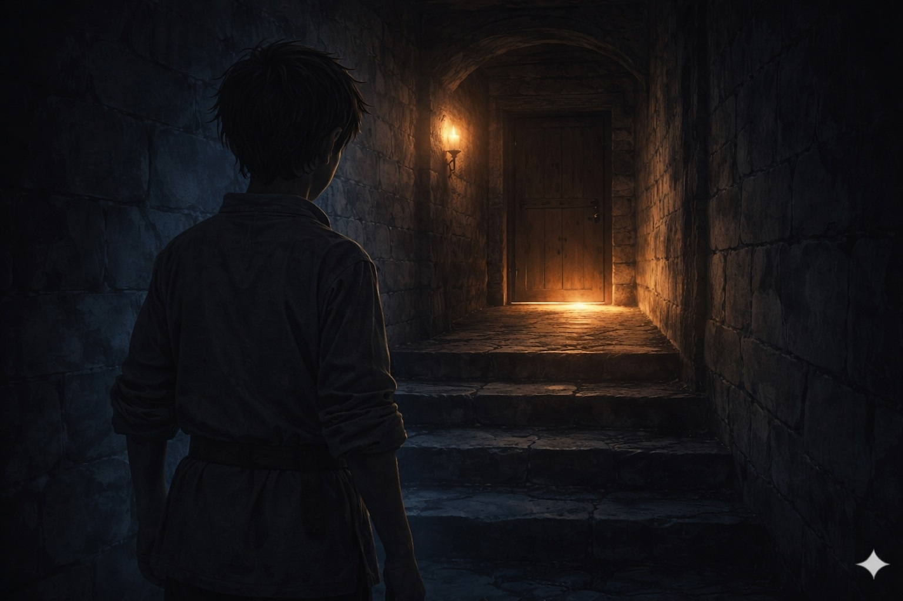
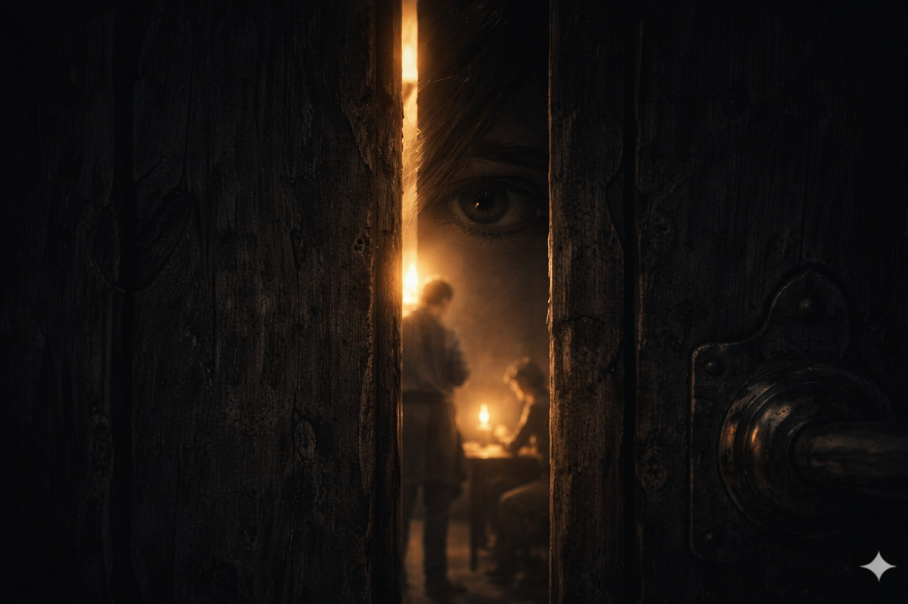
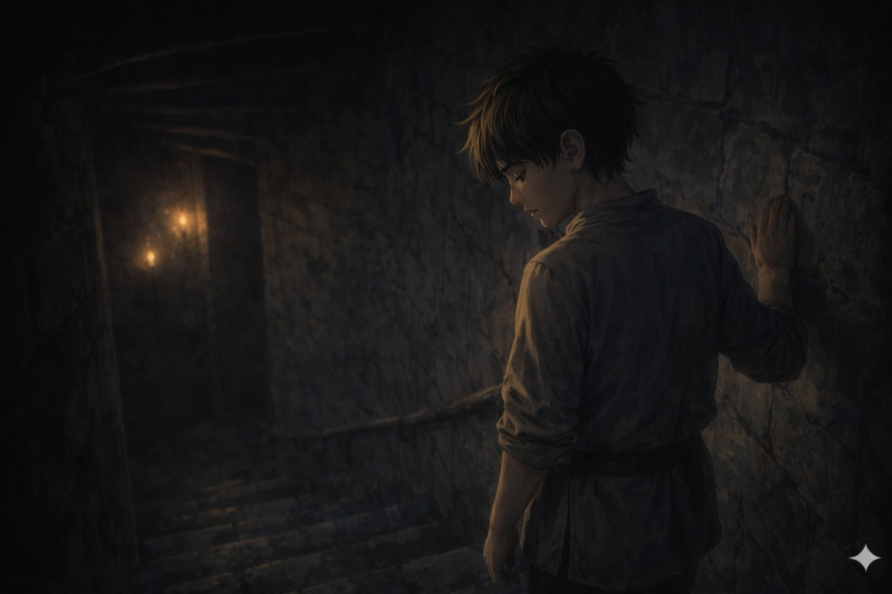
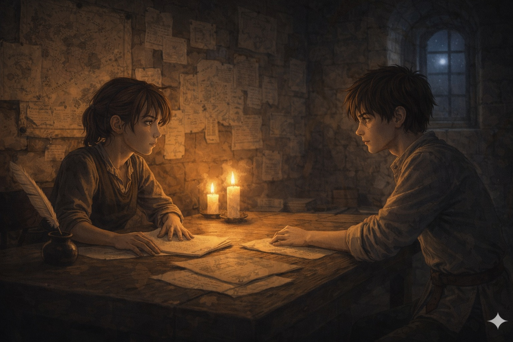

Trois heures du matin, environ. Lyam a pris l'escalier de service de l'aile est — le raccourci que Kern lui a montré à la fin de la troisième semaine. Il en connaît chaque marche, celles qui grincent et celles qui tiennent.
Au bas de l'escalier, le couloir se ramifie à gauche. Un couloir de service — personne ne l'utilise, pas d'interdiction formelle, juste un endroit que tout le monde contourne sans s'en expliquer la raison.
Il y a de la lumière sous la troisième porte à gauche. Pas une torche — la lumière stable d'une lampe à huile posée sur une surface fixe. La lumière de quelqu'un qui écrit.

La porte a un défaut d'ajustement — une légère déformation du bois. Un interstice de deux centimètres à hauteur d'œil. Lyam sent la chaleur filtrer à travers cet espace, et comprend qu'il peut voir sans ouvrir.
Deux personnes. Belart, le secrétaire, assis à sa table — il écrit dans le registre des incidents. Daran de Mauren, debout derrière lui, les deux poings sur le bord de la table. Il supervise. Ce n'est pas une conversation.

Lyam recule. Un pas. Puis un autre. Il tourne les talons dans le couloir sombre et remonte vers le dortoir. Il n'a pas pris l'eau.
Dans le lit du bas, dans le froid du dortoir du nord, il ne dort pas. Il organise ce qu'il sait — les différents fils, dans des ordres différents. Ils ne changent pas de sens selon la façon dont on les dispose.
Il y a une différence entre ne pas mentir et ne pas protéger. On peut ne jamais mentir et laisser quelqu'un se retrouver seul face à une accusation fausse, et cela ne fait pas de vous quelqu'un d'honnête.
Au-dessus de lui, Kern dort avec le souffle régulier des grandes fatigues honnêtes. Il a travaillé six heures sur un problème de droit. Il a produit quelque chose de solide. Il n'a pas l'air de quelqu'un dont le nom est en train d'être inscrit dans un registre en face d'une faute fictive.

Le soir suivant. La Salle des Cartes. Réna corrige ses notes avec deux teintes d'encre — une pour les arguments solides, une pour ceux à creuser. Lyam ferme la porte.
Il lui dit ce qu'il a vu. Dans l'ordre chronologique, sans omissions, sans interprétations — juste les faits, l'heure, les mots exacts, la pièce, les deux personnes. Réna l'écoute. Elle pose sa plume à mi-récit.
Elle ferme les yeux une seconde. Puis : « Tu sais ce que ça veut dire, la partie sur la virgule. » Il dit oui. Elle dit : Il est fils de baron. Son père préside une cour de justice. La virgule, c'est une compétence héritée.
Et puis : Ce que tu as entendu, tu ne peux pas l'utiliser directement — tu étais dans un couloir de service à trois heures du matin, ce qui est une infraction au règlement article 22 alinéa 3.